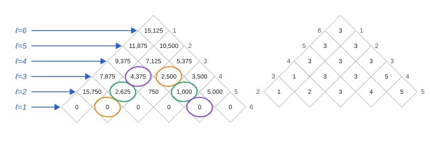
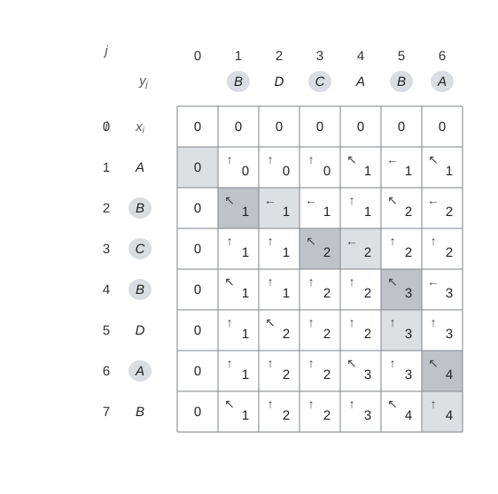

第一節 動態規劃
回顧 Fibonacci 數列
$F(0) = 0,\ F(1) = 1,\quad F(n) = F(n-1) + F(n-2)\ (n \ge 2)$
如果我們直接寫遞迴程式計算 $F(n) = F(n-1) + F(n-2) = (F(n-2) + F(n-3)) + F(n-2)$，會發現到 $F(n-2)$ 這個子問題在展開 $F(n)$ 與 $F(n-1)$ 都會被算到一次。同一個子問題被重複計算了非常多次，這種現象稱為重疊子問題（overlapped subproblem）。動態規劃就是把算過的子問題結果存起來避免重複計算，下次遇到同樣的子問題直接查表
動態規劃的四個步驟
一般動態規劃演算法可以拆成以下四個步驟：
- 描述最佳解的結構：找出最佳解是由哪些子問題的最佳解組成（即最佳子結構 Optimal Substructure）
- 遞迴定義最佳解的值：寫出最佳解的值與子問題最佳解之間的遞迴關係式
- 由下而上計算最佳解的值（Bottom-up）：先算最小的子問題，再逐步推算到大的問題，並把每個子問題的解存進表格中
- 由計算過程反推出最佳解本身：透過表格中記錄的選擇（例如額外開一個 $s$ 或 $b$ 表），還原出最佳解實際上長什麼樣子（不只是最佳值）
第二節 0-1 背包問題
在第十六章貪心演算法中已經說明過：連續背包可以用貪心法（依單位價值排序）求解，但0-1 背包因為物品不能切割，貪心法不保證最佳解，因此需要動態規劃
Pseudocode
1 | DYNAMIC-0-1-KNAPSACK(v, w, n, W) |
說明
由上述說明，可以定義 $c[i, w]$ 為 只考慮前 $i$ 件物品、重量為 $w$ 時的最大價值：
$$ c[i, w] = \begin{cases} 0 & \text{若 } i = 0 \text{ 或 } w = 0 \\ c[i-1, w] & \text{若 } w_i > w \text{（裝不下，只能不拿）} \\ \max\big(v_i + c[i-1, w-w_i],\ c[i-1, w]\big) & \text{若 } i > 0 \text{ 且 } w \ge w_i \text{（拿/不拿 兩個子問題中取較大者）} \end{cases} $$
雙層迴圈分別跑 $n$ 與 $W$ 次，因此時間複雜度為 $O(nW)$，這是一個偽多項式時間
因為 $W$ 自身是一個數值，以二進位表示 $W$ 只需要 $m = \lg W$ 個位元，因此時間複雜度可以改寫：
$O(nW) = O(n \cdot 2^m)$
以輸入位元數 $m$ 來看，這是指數時間，但以數值 $W$ 來看，這是多項式時間
因此這題的解法需要看 $W$ 的具體數值，當 $W$ 相對於 $n$ 呈指數增長時（即 $W \approx 2^n$）就是指數時間；當 $W$ 控制在 $n$ 的多項式級別之內時（即 $W \le n^k$）就是多項式時間。只能算是偽多項式時間，而非真正的多項式時間演算法
第三節 矩陣鏈乘法
Pseudocode
矩陣相乘
1 | MATRIX-MULTIPLY(A, B) |
矩陣鏈乘法
1 | MATRIX-CHAIN-ORDER(p) |
說明
矩陣相乘
當 A、B 矩陣分別為 $p \times q$、$q \times r$ 的矩陣相乘，需要 $p \cdot q \cdot r$ 次乘法。這代表我們可以省下兩個矩陣相鄰的行與列一次乘法的成本。
但這並不意味著我們可以直接用貪心演算法來求解。以直觀的想法我們可能會誤認為相鄰的行與列最大的就先乘，這樣成本最低，是局部最佳解，接著我們可以檢查一下是否滿足第十六章說的貪心演算法的條件：
- 是否具備最優子結構：是。如果已知最佳切點在 $k$，則 $A_{i..k}$ 與 $A_{k+1..j}$ 兩個矩陣鏈各自的最佳解也是原問題最佳解的一部分，這是 $m[i,j]$ 遞迴式（見下方）能夠成立的前提，也是動態規劃的必要條件
- 是否具備局部最優推全局最優：否。這一步的局部最佳解，不保證是最後的最佳解的路。原因是合併相鄰矩陣對這個動作，本身會改變後續矩陣的維度，進而改變之後每一步的成本，也就是你現在判斷這個是最佳解後，你只能確保這一步是正確的，可是其他步會因為這一步改變而答案是不一樣的，舉例而言：
| 矩陣 | 維度 |
|---|---|
| $A_1$ | $40 \times 20$ |
| $A_2$ | $20 \times 30$ |
| $A_3$ | $30 \times 10$ |
| $A_4$ | $10 \times 30$ |
先看三個相鄰矩陣對各自的相乘成本：
$A_1A_2 = 40\cdot20\cdot30 = 24000, \quad A_2A_3 = 20\cdot30\cdot10 = 6000, \quad A_3A_4 = 30\cdot10\cdot30 = 9000$
貪心演算法過程如下：
- 第一步，$A_2A_3$ 成本最小（$6000$），先合併，此時鏈變成 $A_1,\ (A_2A_3),\ A_4$，維度為 $40\times20,\ 20\times10,\ 10\times30$
(這時候你就會發現原本算出來其他組合的成本，在選擇了 $A_2A_3$ 後改了) - 第二步比較剩下兩個相鄰對：$A_1\cdot(A_2A_3) = 40\cdot20\cdot10 = 8000$，$(A_2A_3)\cdot A_4 = 20\cdot10\cdot30 = 6000$。貪心會選成本較小的 $(A_2A_3)A_4$（$6000$）
- 最後只剩 $A_1$ 與 $[(A_2A_3)A_4]$（維度 $40\times20$ 與 $20\times30$）相乘：$40\cdot20\cdot30 = 24000$
貪心總成本 $= 6000 + 6000 + 24000 = 36000$
但實際上最好的方法是先算 $A_1A_2A_3$（成本 $14000$），再與 $A_4$ 合併（成本 $40\cdot10\cdot30 = 12000$），總計 $14000+12000=26000$，其中 $A_1A_2A_3$ 內部又是先合併 $A_2A_3$（$6000$），再合併 $A_1\cdot(A_2A_3)$（$8000$），也就是 $(A_1 \times (A_2A_3)) \times A_4$
矩陣鏈乘法
我們的想法是令 $m[i, j]$ 為計算 $A_i A_{i+1} \cdots A_j$ 所需的最少乘法次數。如果最佳的括號方式是在第 $k$ 個矩陣與第 $k+1$ 個矩陣之間切開（即 $A_{i..k}$ 與 $A_{k+1..j}$ 兩部分先分別算好，再相乘），則：
$$ m[i, j] = \begin{cases} 0 & \text{若 } i = j \\ \displaystyle\min_{i \le k < j}\{m[i, k] + m[k+1, j] + p_{i-1}p_k p_j\} & \text{若 } i < j \end{cases} $$
其中 $p_{i-1}p_k p_j$ 是把 $A_{i..k}$（維度 $p_{i-1}\times p_k$）與 $A_{k+1..j}$（維度 $p_k \times p_j$）這兩個中間結果相乘的成本
Psuedocode 中的外層依鏈長 $l$ 由短到長計算，確保計算 $m[i,j]$ 時，所有更短的子鏈 $m[i,k]$、$m[k+1,j]$ 都已經算好
與上面的貪心演算法對比：
在第二步，貪心法選了當下比較便宜的 $(A_2A_3)A_4$（$6000$），但這個選擇會把 $A_2A_3$ 的結果併進 $A_4$，得到一個 $20\times30$ 的大矩陣，導致最後一步 $A_1$ 要跟這個大矩陣相乘，成本暴增為 $24000$。而動態規劃選了當下比較貴的 $A_1\cdot(A_2A_3)$（$8000$），卻讓最後一步只需要 $40\times10$ 乘 $10\times30$，成本僅 $12000$。雖然並非每一步都是局部最佳解（$A_1\cdot(A_2A_3)$ 多花 $2000$），但換來了後面省下更多（少花 $12000$），整體反而更划算
| 面向 | 貪心演算法 | 動態規劃 |
|---|---|---|
| 依據 | 只看當下這一步的成本 | 窮舉所有切點，比較各切法的子問題總成本 |
| 是否考慮影響 | 否 | 是 |
| 結果 | $36000$（次佳解） | $26000$（最佳解） |
| 時間複雜度 | $O(n^2)$（若真的可行） | $O(n^3)$ |
舉例

如上圖範例所示， 6 個矩陣的維度如下：
| 矩陣 | 維度 |
|---|---|
| $A_1$ | $30 \times 35$ |
| $A_2$ | $35 \times 15$ |
| $A_3$ | $15 \times 5$ |
| $A_4$ | $5 \times 10$ |
| $A_5$ | $10 \times 20$ |
| $A_6$ | $20 \times 25$ |
表格沿對角線旋轉呈現，只用到 $m$ 表的上三角與主對角線。以計算 $m[2,5]$ 為例，需要比較三種切法：
$$ m[2,5] = \min \begin{cases} m[2,2]+m[3,5]+p_1p_2p_5 = 0+2500+35\cdot15\cdot20 = 13000 \\ m[2,3]+m[4,5]+p_1p_3p_5 = 2625+1000+35\cdot5\cdot20 = 7125 \\ m[2,4]+m[5,5]+p_1p_4p_5 = 4375+0+35\cdot10\cdot20 = 11375 \end{cases} = 7125 $$
最終 $m[1,6] = 15{,}125$ 為 6 個矩陣相乘所需的最少乘法次數
第四節 最長子序列
Pseudocode
1 | LCS-LENGTH(X, Y) |
說明
令 $Z = \langle z_1, \dots, z_k \rangle$ 為 $X_m = \langle x_1,\dots,x_m\rangle$ 與 $Y_n = \langle y_1,\dots,y_n\rangle$ 的一個 LCS：
- 若 $x_m = y_n$，則 $z_k = x_m = y_n$，且 $Z_{k-1}$ 必為 $X_{m-1}$ 與 $Y_{n-1}$ 的 LCS
($X$ 與 $Y$ 的最後一個字元相同：確認這一個是 LCS 中的成員，再判斷 $X_{m-1}$ 與 $Y_{n-1}$ 的 LCS) - 若 $x_m \ne y_n$，且 $z_k \ne x_m$，則 $Z$ 必為 $X_{m-1}$ 與 $Y_n$ 的 LCS
($X$ 與 $Y$ 的最後一個字元不同，而且 LCS 中 $Z$ 的最後一個字元與 $X$ 的最後一個字元不同：判斷 $X_{m-1}$ 與 $Y$ 的 LCS) - 若 $x_m \ne y_n$，且 $z_k \ne y_n$，則 $Z$ 必為 $X_m$ 與 $Y_{n-1}$ 的 LCS
($X$ 與 $Y$ 的最後一個字元不同，而且 LCS 中 $Z$ 的最後一個字元與 $Y$ 的最後一個字元不同：判斷 $X$ 與 $Y_{m-1}$ 的 LCS)
也就是說，比較 $X$ 與 $Y$ 的最後一個字元是否相等，決定了要往哪個子問題遞迴
令 $c[i,j]$ 為 $X_i$ 與 $Y_j$ 的 LCS 長度：
$$ c[i,j] = \begin{cases} 0 & \text{若 } i = 0 \text{ 或 } j = 0 \\ c[i-1, j-1] + 1 & \text{若 } i,j > 0 \text{ 且 } x_i = y_j \\ \max\big(c[i,j-1],\ c[i-1,j]\big) & \text{若 } i,j > 0 \text{ 且 } x_i \ne y_j \end{cases} $$
舉例
以 $X = \langle A,B,C,B,D,A,B \rangle$、$Y = \langle B,D,C,A,B,A \rangle$ 為例：

表格右下角 $c[7,6] = 4$，即為 LCS 的長度。實際的 LCS 為 $\langle B, C, B, A \rangle$。表中每個儲存格 $c[i,j]$ 只依賴 $c[i-1,j]$、$c[i,j-1]$、$c[i-1,j-1]$ 三個已經算好的值，可以把它當成在填表格；$b[i,j]$ 中的 “↖” 記號代表該位置是由 $x_i = y_j$ 貢獻而來，也就是上一個是 LCS 實際上可以找到的其中一個字元
總結
| 問題 | 狀態定義 | 遞迴關係 | 時間複雜度 |
|---|---|---|---|
| 0-1 背包問題 | $c[i,w]$：前 $i$ 件物品、容量 $w$ 之最大價值 | 拿或不拿取較大者 | $O(nW)$（偽多項式） |
| 矩陣鏈乘法 | $m[i,j]$：計算 $A_i\cdots A_j$ 之最少乘法次數 | 列舉切點 $k$ 取最小 | $O(n^3)$ |
| 最長子序列 (LCS) | $c[i,j]$：$X_i$ 與 $Y_j$ 之 LCS 長度 | 依 $x_i$ 是否等於 $y_j$ 分支 | $O(mn)$ |
參考文獻
T. H. Cormen, C. E. Leiserson, R. L. Rivest, and C. Stein, Introduction to Algorithms, Second Ed., The MIT Press, 2001.